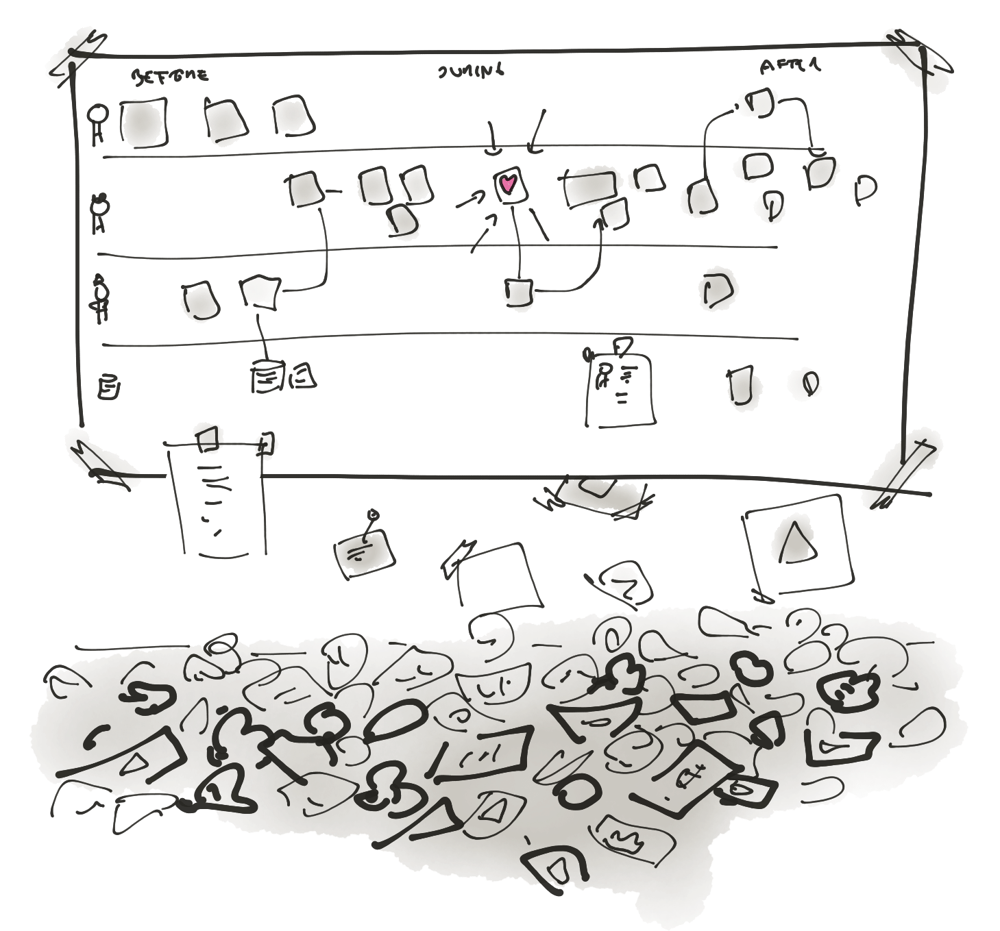
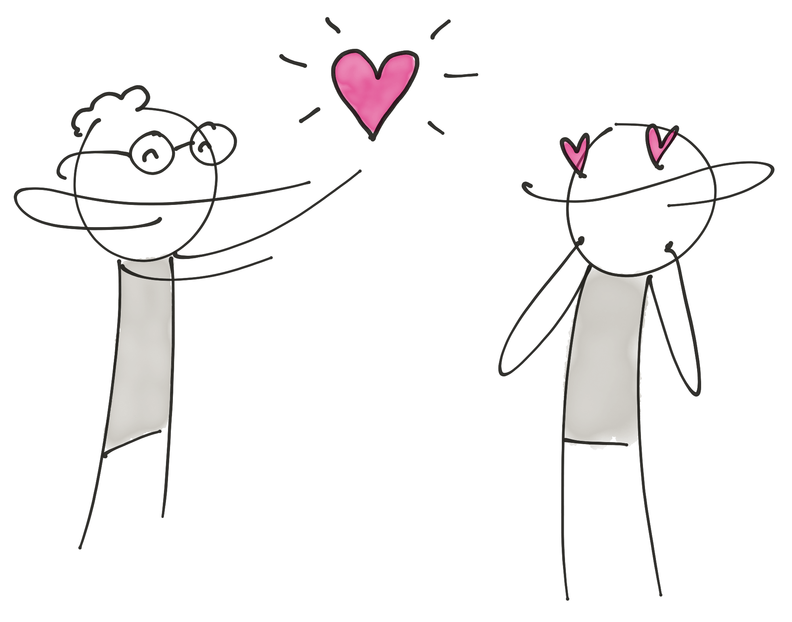
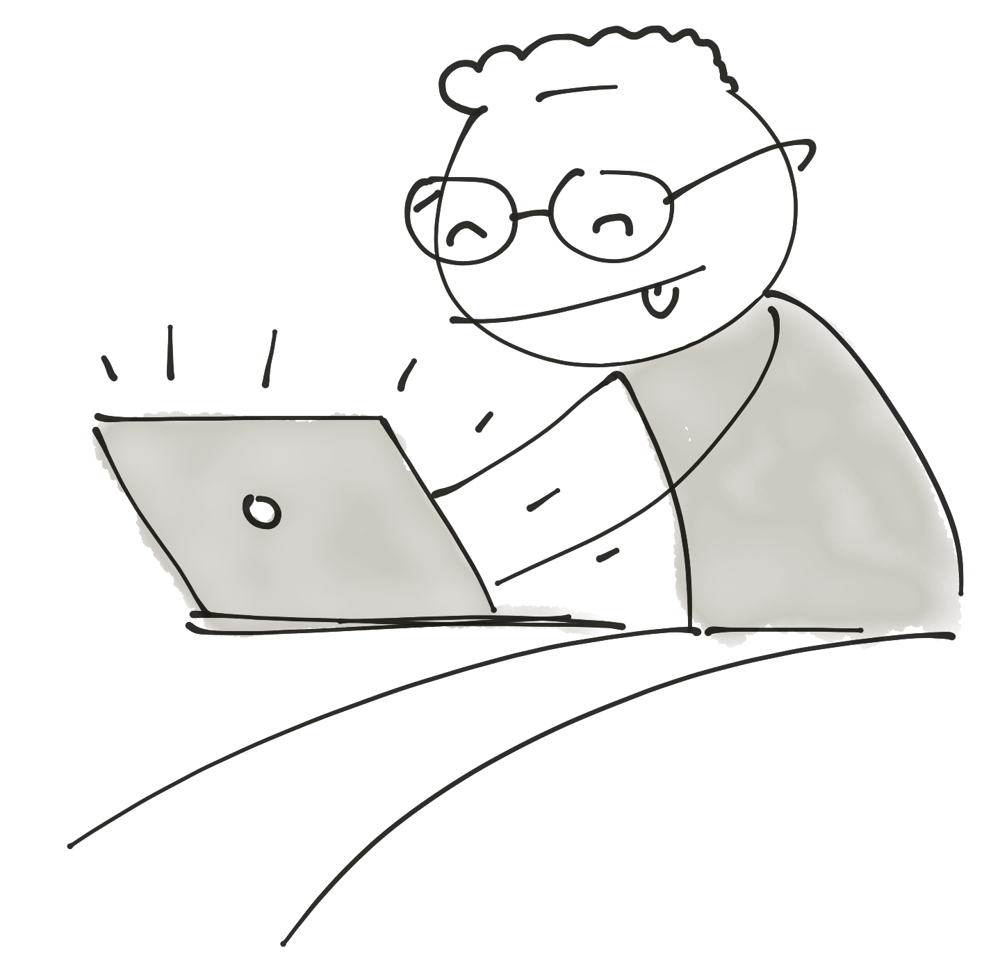
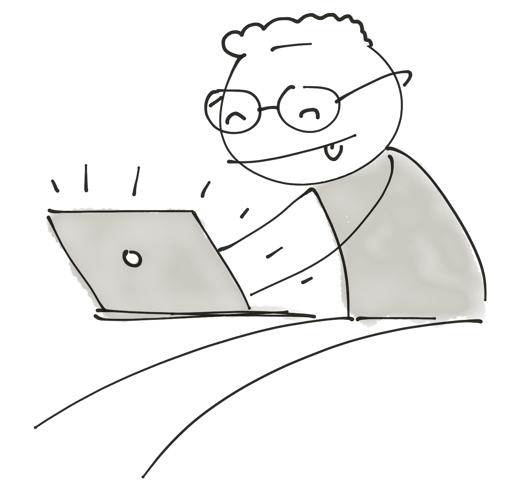
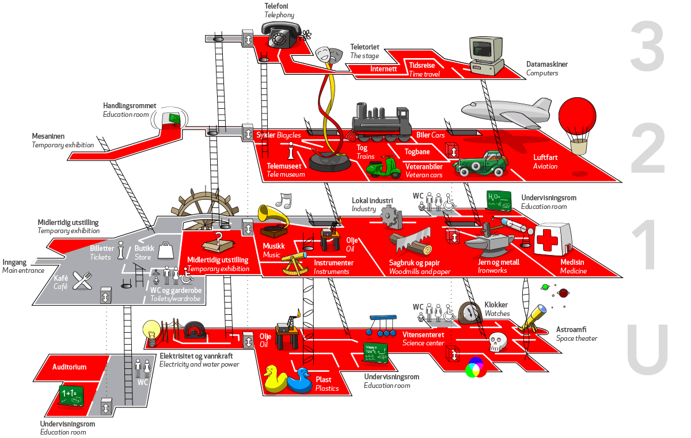
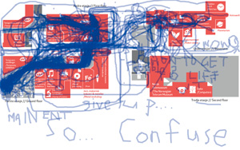
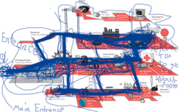

Hi there!
Who am I? My name is Daniel Jackson and I do design, programming, and business consulting with a touch of entrepreneurship and have been lucky enough to work with both big and small organizations.
Open for freelance work. Need a designer that knows code and business, or a programmer that knows design and business? Hit me up!
Most proud of the successful non-profit startup I was hired to found, check it out at frivillig.no.
Currently working on the next big thing: receiptrunner.com.
This space is my portfolio and CV.
References
Former clients who wish to testify their experience working with me. Send me an email at daniel@snilldesign.no if you wish to contact them, or anyone else on my CV, and I'll send you their contact information.
The quotes are in the original language (Norwegian üá≥üá¥).
Posten Norge: Service design in a big, complex, organization
"Daniel er en prosjektleder og tjenesteutvikler med drive og uredd framgangsmåte. Empatisk og utfordrende sparring. Gode framstillinger av problemstillingene og kreative løsninger med realisme og høy kvalitet! Vår evne til og dissikere og analysere problemet vi sto ovenfor ble betydelig styrket av å ha Daniel på laget, og vårt fokus og evne til å skape løsninger – samt kommunisere disse til våre mange interne interessenter – ble betydelig styrket av å ha ham på laget"
"Daniel er veldig dyktig og kompetent designer. Han har en fantastisk evne til å sette seg inn i nye problemstillinger og leverer stor verdi på kort tid. Han er selvdreven men fungerer også veldig bra i grupper. Han tar initiativ til å gjennomføre de oppgavene som må til for få et bra sluttresultat."
Frivillighet Norge: Web design and project management
"Daniel Jackson har stor kompetanse på digital tjenesteutvikling og brenner for digitale produkter som gjør hverdagen enklere for brukeren. Han setter alltid brukerens behov i sentrum og er god på ulike former for brukermedvirkning. Daniel er en pålitelig person med høy integritet. Han tørr å utfordre det etablerte og evner å snakke om sine fagfelt på en tilgjengelig måte. I tillegg er Daniel en trivelig og positiv person og jeg kan på det varmeste anbefale hans tjenester."
Kobler: Coding MVP, service design, and consulting
"Kan som tidligere kunde bare lovprise Daniel Jackson som kombinerer det beste fra design med det beste fra programmering. Hjalp oss i Kobler med å både utvikle en ny type CV for nyankomne, og å hjelpe oss innse at teknologien vi trodde vi ønsket ikke passet det reelle behovet. Verdifullt!"
"Det var en glede å jobbe med Daniel som er så dyktig på sitt område og samtidig klarer å styre to sterke personligheter midt i et prosjekt som betyr enormt mye for begge."
Skill set
Design


Summarized:
- Service designer
- Interaction designer
As a designer my goal is to make sure we're solving the right problem, in a way that makes users fall in love with the solution. It will take a hundred no's to get to the right yes, but we'll find it together.
My strengths lie in service design, strategic design, and usability. I'm not as strong a graphic designer, and I shouldn't make your logo.
Concrete skills
- Designing services (both digital and analogue)
- Designing digital products
- Designing web pages (and making them)
- User research
- Mapping and visulizing findings
- Wireframing, creating interaction designs
- Holding workshops and facilitating
- Project management and product ownership
Background:
I have a 5 year Master of Design, from AHO. My Master thesis was on how Service designers can get projects realized.
Dad taught me the first tenets of web design in primary school. Back then my hero was the usability old-timer and guru Jakob Nielsen.
I've been paid to do design in some form or other since 2006.
I strongly believe you can only design what you understand. For me, that extends beyond user research and picking the brains of stakeholders into learning everything from programming to business.
Code
 

Summarized:
- Understanding the limits and possibilites of code when designing, making sure we move 10x faster
- Web frontend and backend
- Prototyping and making early MVPs
I can make your idea into a real, usable, thing. I'm best suited for making your webpage, MVP, or prototype.
I've been programming since dad taught me HTML and <blink> in 1998. Using web technologies I can create almost anything, but I don't have a CS degree and can't explain different sort algorithms.
Concrete skills
- Web pages and in-browser apps of all types (Using all sorts of CMSes)
- Web based Mac/Windows/iOS/Android apps (Electron, React Native, etc.)
- Web server based backends (Node, PHP)
- Front end stuff: Deep knowledge of HTML, CSS. Good knowledge of JS, React. Have used Angular, jquery, and loads of older stuff.
- Back end stuff: Node, SQL, noSQL. Learnt PHP a long time ago.
Background:
The latest and biggest thing I've built is Receipt Runner, an Electron based Mac, Windows, and Linux app that finds the receipts you need to deliver to your accountant. Making it has taught me React, Electron, and how to handle a biggish code base.
Business
Summarized:
- Able to connect to and understand business majors, opening up communication between business, design, and programming.
- Designing for profit
- Designing so the organization can deliver the design
- Project management and product ownership experience
I've run my own freelance business since 2008, but when we did our master thesis and found that service designers lack business understanding I understood that wasn't enough to make designs that actually work. Since then, I've been seeking out knowledge on business from both books and experience. It's lead me to take an Executive MBA from Quantic, work as a product owner for frivillig.no, and attempt to be a founder for Receipt Runner.
Concrete skills
- Executive MBA (Quantic) and Economics (UiO). Basic understanding of market economics, leadership theory, finance theory, operations management, strategy, innovation theory, accounting, data backed decision making, statistics, pricing, and change management.
- Deep dive into startups and entrepreneurship, including failed attempts at raising funds.
- Experience leading teams from both non-profits and for-profits
- Good with numbers, measuring, and data analysis
Stuff I've done
Frivillig.no
Tasked with designing, launching and running a national service for recruiting volunteers: Frivillig.no
The non-profit Frivillighet Norge hired me to create two things:
- A website for volunteers to find missions they can do for non-profits all around Norway, based on the success of Volontärbyrån in Sweden
- A team to run the website and help train non-profit organizations in recruiting, welcoming and keeping the volunteers
We had funding based on the hope that we would recruit 500 volunteers in 2016 and grow to recruiting 3000 in 2019. We crushed those goals, and by the time I left the project we'd had over 4000 people sign up to volunteer in just 10 months.
Freelance service design
I've had the honour of doing freelance work for big companies like Posten Norway and Ulstein, together with fantastic people in local service design companies like Eggs, LiveWork and Halogen.
Work has ranged from simple one-day helping hands to complex, months long projects, planning services on a strategic level. In different teams I've helped arrange workshops, worked with internal communication, done user and field research and created service blueprints.
Many were done as a two-man team together with Jane Pernille Landa Hansen.
The contents of the projects are confidential, but there's a list of clients in my CV below.
Here's a few non-confidential student projects:
Master thesis:
Service Design as a Service
In the spring of 2015 Jane Pernille Landa Hansen and I did over 60 interviews and shadowed five processes to write a thesis on how Service Designers can get our designs implemented in bigger organisations.
Here is the resulting work. We hope it can help you.
Science Museum Map
Visitors found it hard to navigate the museum. After analyzing and understanding why, I came up with a new map which tests 24 times better than the old one:
Teknisk Museum is a success with double the visitors today it had only ten years ago. That success leads also to increased demand for tools that help you navigate the museum without having to ask the personell.
In this project we worked closely with the museum and I wanted to make something the fantastic people working there could actually implement with their current budget. After the analysis I had several different angles of attack, but chose to create a new map on the evaluation that it would have the biggest impact for the museum and still be feasable.
Testing on the Turk
To test it I built a tool using Amazon Mechanical Turk where I paid people 40 cents to come in and draw directions on the map. Afterwards I had numbers showing that 24 times more people found the way on my new map - and a few hundred drawings that I combined into these telling images:
The old map:
The new map:
You can clearly see the common mistakes like walking in the air (the white area on the old map is not walkeable) - but also telling is the fritzyness around the areas fewer people have been to.
Student project, 3rd year AHO. Currently in use by Teknisk Museum.
CV
Education:
- Master of Design, Specialization in System Oriented Service Design, AHO. 2009 - 2015
- Executive MBA, Quantic (2019 - present)
- Psychology, UiO. 2012 - 2013
- Economics, UiO. 2005
Organizational experience
Oslo School of Architecture and Design (2009 - 2012)
- Elected President, Student Committee at AHO (SAHO). 2011 - 2012
- Leader of the Elvelangs project, 2011
- Elected Vice President, Student Committee at AHO (SAHO), 2010 - 2011
- Student Representative for the Institute of Form, Theory and History, 2010-2011
- PR-committee, Student Committee at AHO (SAHO), 2009 - 2011
Political, present
- Board, Frogner Venstre (Liberal Party) (2019 - present)
- Member, Venstre (Liberal Party) (2011 - present)
Political (2003 - 2008)
- Elected leader of the IT politics committee, Red Party (2006-2008)
- Elected leader of Red Youth Østfold (2005-2006)
- Elected leader of Youth against the War, Fredrikstad (2003)
- Board of Red Electoral Alliance, Fredrikstad (2003-2005)
- Elected leader of Red Youth Fredrikstad (2003 - 2005)
Work experience:
Receipt Runner (2017 - present)
- Founder
Frivillighet Norge (2015-2016)
- Product owner (Project Manager, designer and tech lead) for Frivillig.no (2015-2016)
Freelance design work, non-web (2013 - present)
- Service design for Posten Norge (2019)
- Service design for Leieboerforeningen (2018-2019)
- Work related to Frivillig.no, Frivillighet Norge (2017-)
- Other minor work, mainly related to Frivillighetsprisen. Frivillighet Norge (2017-2018)
- Designing service experience: Field Research, Workshops, Concept development, Posten Norge (2014)
- Brand manual video, djuice (2014)
- Workshop help on Branding in Maritime Norway (2014)
- Communication design for Posten Norge (2014)
- Workshop series for Posten, Centre for Service Innovation and Mauricy Filho (2013)
- Visualizing workshop at Lindrerud (2013)
- Ulstein Maritime, Field Research and concept development (2013)
Freelance web design work, (2006 - present)
- Content Architecture, and Project Management, FrivillighetNorge.no, together with Feed. (2019)
- Design, coding, and maintaining custom voting system, Frivillighetsprisen.no and IMDI.no (2018 - present)
- Design and coding, Kobler.no (2016-2017)
- Design and coding, Sakprosasiden.no (2015)
- Design and coding, Sakprosabloggen.no (2015)
- Coding wordpress theme for Store Norske Leksikon (2014)
- Coding wordpress theme for Amnesty International Norway, ihrec.net (2013)
- Blind Youth site: nbfu.no, (2012)
- Election site for the Blind youth, valg.nbfu.no, (2011)
- Universelldesign.info, for AHO, (2010 - 2011)
- Kennel Tsar-Ping (2010)
- Coding and consultancy, Amnesty International Norway, activist.no (2010)
- Coding and consultancy, Amnesty International Norways blog (2009)
- Design and coding, Virrvarr.net (2009)
- Angstringen.no (2008)
- Demokratiuka.no (2008)
- UmEU.no (Pre 2008)
- sosialisme.no (Pre 2008)
- filesharer.org (Pre 2008)
- roedt.no (Pre 2008)
Opera Software (2006 - 2008)
- Quality Assurance Team Leader, Symbian (2008)
- Quality Assurance Engineer, Symbian (2006 - 2008)